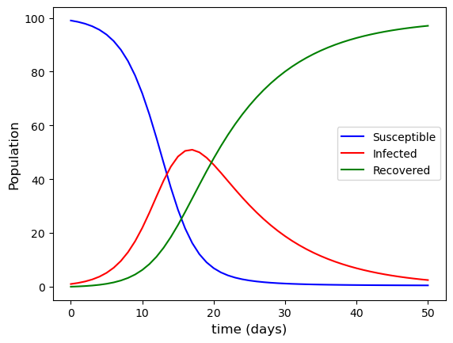

1.3. Systems of ODEs#
So far we have considered initial value problems involving a single differential equation. However, many real-world models involve several interacting quantities, each of which must be described by its own differential equation. Such models lead naturally to systems of ODEs.
Recall that a single first-order ODE is expressed as a function of the single independent variable \(t\) and a dependent function \(y\)
A system of first-order ODEs is expressed as a set of multiple ODEs such that
where \(y_1, y_2, \ldots, y_N\) are multiple dependent functions. An IVP involving a system of ODEs requires an initial value for each equation in the system, i.e., \(y_1(t_0) = a_1\), \(y_2(t_0) = a_2\) etc. where \(a_1, a_2, \ldots, a_N\) are constants.
To apply a numerical method to solve a system of ODEs, we can write it in vector form \(\mathbf{y}' = \mathbf{f}(t, \mathbf{y})\) where
Recall that the Euler method for solving an IVP for a single ODE is
Since vector addition and scalar multiplication are performed componentwise, the Euler method extends naturally to systems of ODEs
An important consequence of this vector formulation is that higher-order ODEs can be rewritten as systems of first-order ODEs. This allows numerical methods such as Euler’s method and Runge-Kutta methods to be applied to a much wider class of problems.
Example 1.2
The SIR model is a simple model that describes the spread of an infectious disease in a population. The model divides the population into three compartments: those who have not yet contracted the disease but are susceptible (\(S\)) those who are infected (\(I\)) and those who have recovered and gained immunity (\(R\)). The formulation of the model is
where \(N = S + I + R\) is the total population, \(\beta\) is the infection rate in the number of people per day who become infected, and \(\gamma\) is the recovery rate at which a person who is infected recovers per day.
A disease breaks out in a population where \(\beta = 0.5\), \(\gamma = 0.1\) and \(S(0) = 99\), \(I(0) = 1\) and \(R(0) = 0\). compute the solution to the SIR model over the first 50 days using the Euler method with a step length of \(h = 1\).
Solution
Let \(y_1 = S\), \(y_2 = I\) and \(y_3 = R\) and writing the SIR model in vector form we have
The initial conditions are \(\mathbf{y}_0 = (99, 1, 0)\) and \(N = 100\), \(\beta = 0.5\), \(\gamma = 0.1\) and \(\beta/N = 0.005\). Calculating the first few steps of the Euler method with \(h = 1\)
The plot of the solutions to the SIR model using the Euler method for the first 50 days of the infection is shown in Fig. 1.7

Fig. 1.7 Euler method solutions for the SIR model with \(S(0) = 99\), \(I(0) = 1\), \(R(0) = 0\), \(\beta = 0.5\) and \(\gamma = 0.1\).#
The susceptible population decreases as individuals become infected, the infected population increases through transmission and decreases through recovery, and the recovered population increases as infected individuals recover.
1.3.1. Coding the Euler method#
You may have noticed that calculating the solution to an initial value problem using a numerical method using a pen, paper and calculator is a tedious exercise requiring lots of repeated calculations. Fortunately we have computers to do this work for us. Below is a function called euler() which solves a system of ODEs using the Euler method.
def euler(f, tspan, y0, h):
# Determine the number of ODEs in the system
N = len(y0)
# compute the number of steps required
nsteps = round((tspan[1] - tspan[0]) / h)
# Define solution arrays and assign initial values
t = np.zeros(nsteps + 1)
y = np.zeros((nsteps + 1, N))
t[0] = tspan[0]
y[0,:] = y0
# Loop through the steps and compute the Euler method solution
for n in range(nsteps):
y[n+1,:] = y[n,:] + h * f(t[n], y[n,:])
t[n+1] = t[n] + h
return t, y
This function assumes that the ODE function returns a NumPy array whos length equals the number of equations in the system.
function [t, y] = euler(f, tspan, y0, h)
% Determine the number of ODEs in the system
N = length(y0);
% Compute the number of steps required
nsteps = floor((tspan(2) - tspan(1)) / h);
% Define solution arrays and assign initial values
t = zeros(nsteps + 1, 1);
y = zeros(nsteps + 1, N);
t(1) = tspan(1);
y(1,:) = y0;
% Loop through steps and compute the Euler method solution
for n = 1 : nsteps
y(n+1,:) = y(n,:) + h * f(t(n), y(n,:))';
t(n+1) = t(n) + h;
end
end
This function assumes that the ODE function returns an column vector whos length equals the number of equations in the system.
The inputs to the function are:
f- the name of the ODE function to be solved (this needs to be defined elsewhere)tspan- an array containing the two values \(t_0\) and \(t_{\max}\)y0- the initial values of the solution to the ODEh- the step length
The function computes the number of steps required to advance the solution from \(t_0\) to \(t_{\max}\) and then declares two arrays t and y in which the solution will be stored. The initial values \(t_0\) and \(y_0\) are copied into the first elements of t and y and then a for loop is used to compute the Euler method for each step.
The code below sets up and solves the SIR model example from Example 1.2 using the Euler method
# Define SIR model
def SIR(_, y):
S, I, R = y
N = S + I + R
dS = -beta / N * I * S
dI = beta / N * I * S - gamma * I
dR = gamma * I
return np.array([ dS, dI, dR ])
# Define IVP parameters
tspan = [0, 50] # boundaries of the t domain
y0 = [99, 1, 0] # initial values
beta, gamma = 0.5, 0.1 # Model parameters
h = 1 # step length
# Solve the IVP using the Euler method
t, y = euler(SIR, tspan, y0, h)
# Plot solution
fig, ax = plt.subplots()
plt.plot(t, y[:,0], "b-", label="Susceptible")
plt.plot(t, y[:,1], "r-", label="Infected")
plt.plot(t, y[:,2], "g-", label="Recovered")
plt.xlabel("time (days)", fontsize=12)
plt.ylabel("Population", fontsize=12)
plt.legend()
plt.show()
from myst_nb import glue
glue("sir_plot", fig, display=False)
print(y)
% Define SIR function
function y = SIR(~, y, beta, gamma)
S = y(1);
I = y(2);
R = y(3);
N = S + I + R;
y = [ -beta / N * I * S ;
beta / N * I * S - gamma * I;
gamma * I ];
end
% Define IVP parameters
tspan = [0, 50]; % boundaries of the t domain
y0 = [99, 1, 0]; % initial values [S, I, R]
beta = 0.5; % infection rate
gamma = 0.1; % recovery rate
h = 1; % step length
% Solve the IVP using the Euler method
[t, y] = euler(@(t, y)SIR(t, y, beta, gamma), tspan, y0, h);
% Plot solution
plot(t, y(:, 1), 'b-', LineWidth=2)
hold on
plot(t, y(:, 2), 'r-', LineWidth=2)
plot(t, y(:, 3), 'g-', LineWidth=2)
hold off
xlabel('$t$', Fontsize=14, Interpreter='latex')
ylabel('$y$', Fontsize=14, Interpreter='latex')
legend('Susceptible', 'Infected', 'Recovered', Location="east")
axis padded